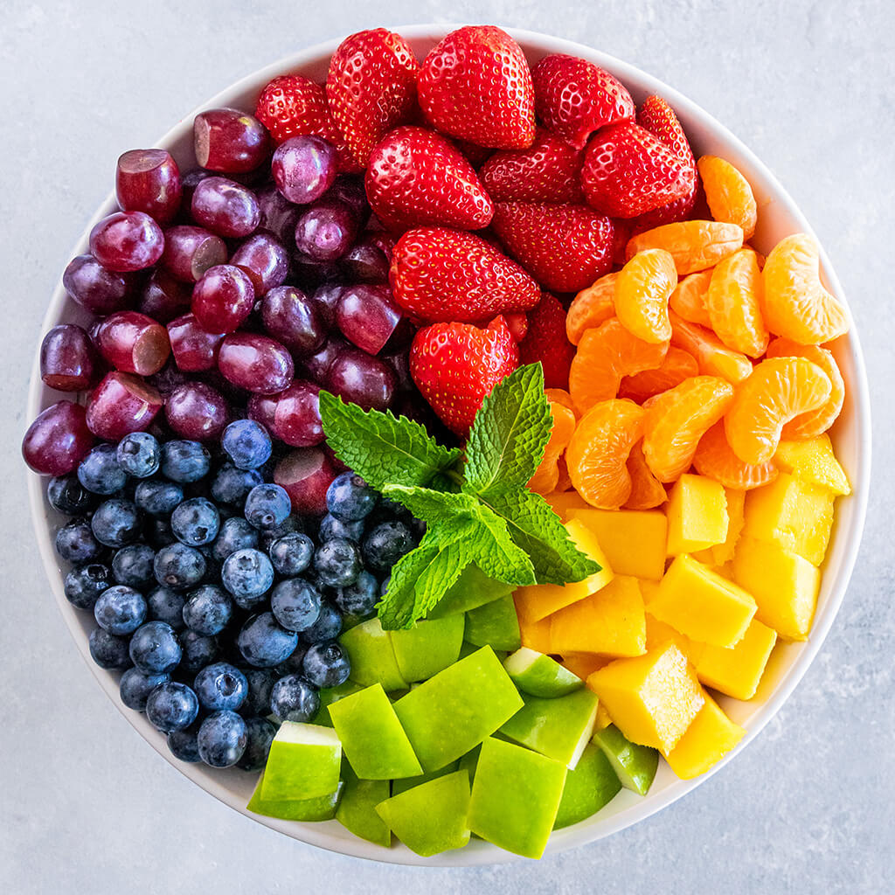
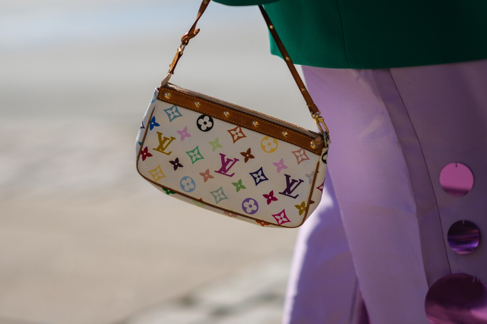

Single Men are Starving Men.
A starving man doesn't care about what kind of food he gets as long as he satisfies his hunger.
Only when his hunger is satisfied will he start to care about the quality of his meal.
Must the starving man lie to the woman cook, and tell her that her food is all he will ever need, just to feed himself?
Serve the starving man, and he may like your food and serve you.
----
There are some situations where the man is sufficiently satisfied with a woman's cooking and is happy to stay with her, serve her, and protect her.
There are other situations where she can stave off his hunger, but he knows he cannot be satisfied with her cooking long-term and desires a better chef. The man will love her for staving off his hunger, but will not want to give up his quest for a better meal.
There are some situations where the cook is so bad, she can hardly be called a cook, therefore the food must be considered "sexual experiences with an attractive woman".
The more attractive the woman, the less sexual the experience has to be. I would rather hold hands with a 10 and talk about sex with her than have sex with a 7.
The experience with a highly attractive woman doesn't even need to be sexual for it to still count as a sexual experience for the starving man. Just talking with a truly pretty girl is plenty. Sex is merely an intensifying of the already shared experience men and women share when around one another. The whole thing is foreplay.
Most fertile women have sexual value enough to satisfy a man's hunger. But they withold it. They may fear if they feed the man he may move on and leave them lonelier than before. They may fear society's judgment, or God's based on religion. They see consequences. They may have reasons known only to themselves, even subconscious ones. They may place added value on intimate interactions and want a perfect record of them. They may be self-conscious, and think their fruit isn't good enough for the man. I think most women underestimate their value to men, in that we single men are starving. We need them, even if we don't want to commit to their food forever. We are willing to make deals with the chef, maybe even pay for it.
Women wear red lipstick to simulate the fruit we starving men desire.
I am willing to commit to certain chefs. But their price is too high, and I cannot afford it with my current attractiveness and social status.
I need a lesser chef, one that reliably gives me good food.
I don't think women will like this metaphor, but it's the truth.
It doesn't mean men don't like personality. We love it. We just don't care how the food is displayed when we're starving to death. We need the food now. Only after feeding ourselves will we start to notice or care about how the plate is decorated or seasoned.
I'm talking about basic fundamental human needs. I do not claim to understand women, and theirs. But I understand mine. This, ladies, is the truth of men.
Just as the starving man cannot eat a full meal, and has to ease his way back into eating, we don't need instant sex. But we do need to eat. We need to hold hands. Kiss, talk about the truth of how we feel. We need a handjob, or a hint of one to come. I think women underestimate the small difference between a handjob and sex. It's still cumming. We just need to cum with a woman. The starving man just wants an apple. It's just as useful as a full meal. Only when the man is full and therefore civilized will he strongly prefer the full meal.
Give me whatever fruit you are comfortable giving me. I want it. I need it. I am starving.
If you don't want to give me any fruit, tell me why not, and I will show you that what you are giving me is still fruit.
If you offer me fruit and I don't want it, I guarentee there is something you can do as a chef to satisfy my hunger. If you are a willing chef and obedient, the man will find use for you to feed himself. Just know what you are, and what food you have. I will tell you if you ask.
This is serious. Most men are dead inside. They have been starved to death, and look at pictures of food online. Or maybe they stick with a chef they don't love because they fear going hungry looking for a better one. Save us. Save me. Start with the apple. Tell me what I have to do for the apple. I will do it. But don't make me lie. Let's base our relationship on the truth. No social frameworks defining how men and women should behave. Just raw truth of what a man wants, what a woman has, and what he has to do to get it. Tell me. Feed me. Trust me. And if I like it, I'll give you everything in my power to get more, or simply to reward you, or pay you back.
Now tell me, what is the truth of what women want? Perhaps we can reach some kind of arrangement. Is it marriage? Is that really what you want? A baby? A good father? A good husband? A good boyfriend? I want to give some of you a baby, and to be loyal to even less of you, but right now there's so much of a financial commitment, or time commitment. With a good enough chef I could fully commit. I don't want to have to work like a slave just to get fruit. I would like to have many kids, with many women, and to be free enough to travel to each one and be a good father to each, but job slavery gets in the way of that. Child support gets in the way of that, and maybe that's for the best. I'm just saying the truth of what a man really wants. Other men are cowards, and they all know this is true. Women, what is your truth? Do you want to have the baby of your hottest customer, and have the customer who likes your food the most be the husband?
Do you realize you have a million dollars in your purse that never runs out, and you pass by beggers on the streets every day, without giving them enough money for a meal when they are starving?
Women are people first. Of course they can be just friends, or colleagues. But how can you really be my friend, if I'm starving, and you aren't actively helping me get food by either your own cooking or another's cooking? When a man lies to have sex with you, that's no different than Aladdin stealing an apple. I'm the only guy telling the truth. I'm Aladdin who doesn't steal.